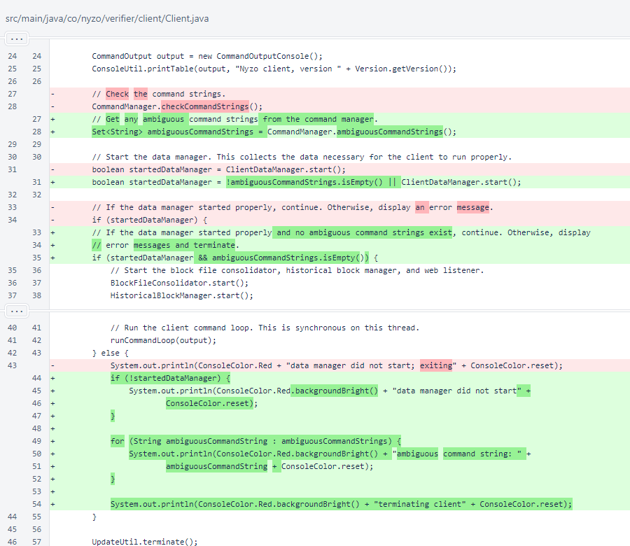
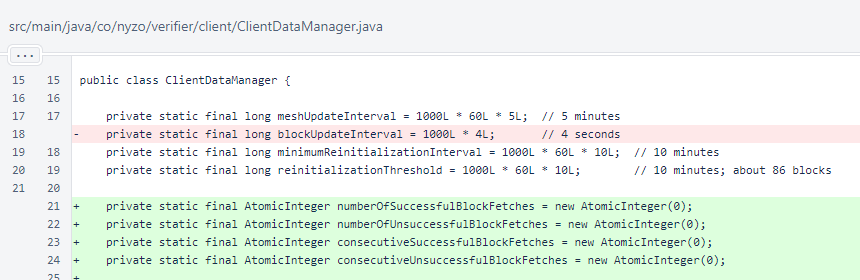
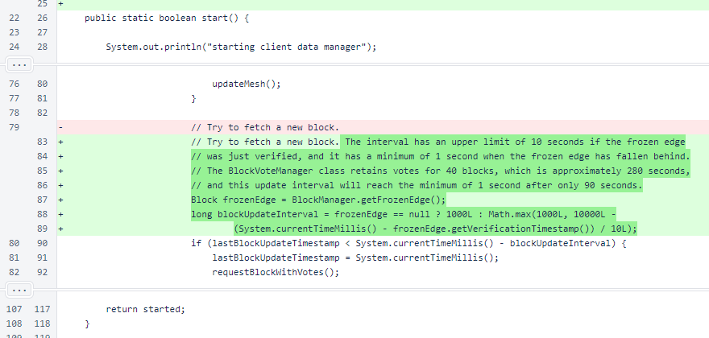
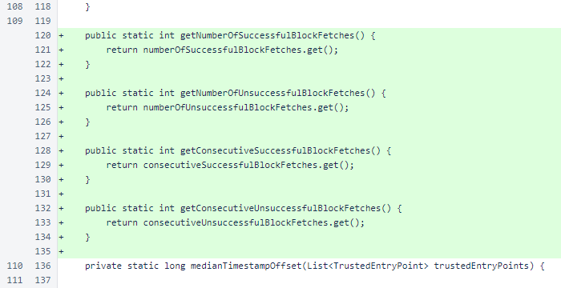
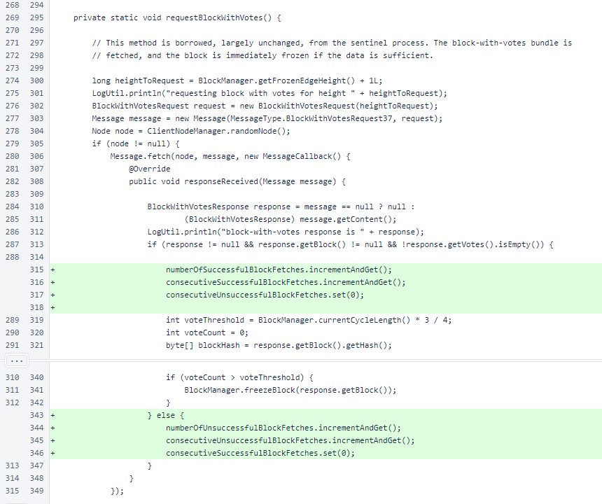
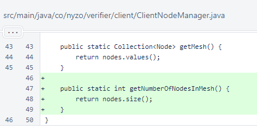
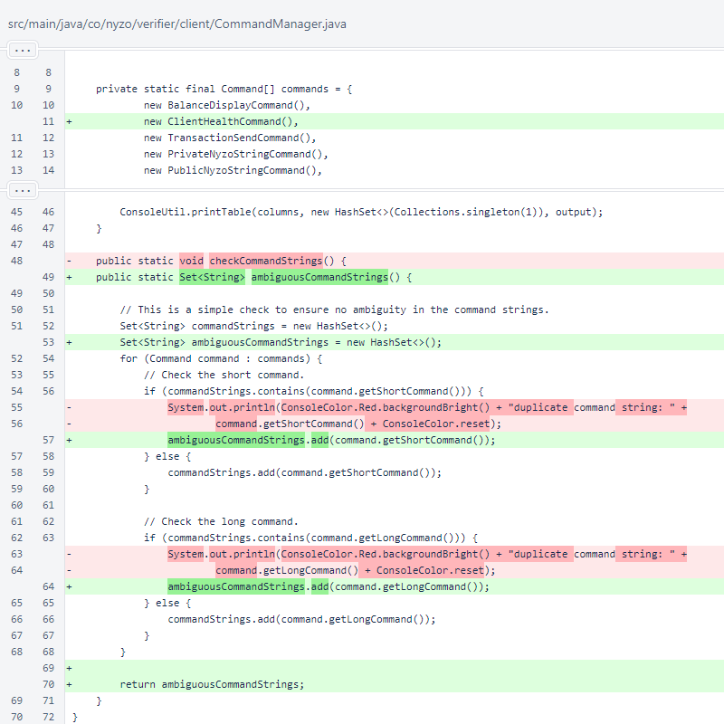
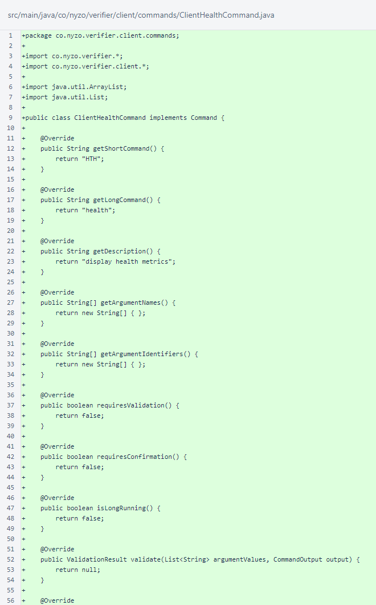

Nyzo version 613 (commit on GitHub) improves client tracking of the blockchain and adds a client command to display client health metrics.
This version affects the client only.
In the Client class, the initialization process has been modified slightly. Previously, command strings for all commands were checked, and warnings were shown for any ambiguous command strings. Now, the errors are still shown, but the client is not allowed to start if any ambiguity is present.
In ClientDataManager, accumulators have been added for block fetch counts. The constant blockUpdateInterval has been removed in favor of a dynamic update interval, calculated locally before use.
A dynamic block update interval is now calculated. The timing is explained in the comment.
Accessors are provided for the fetch metrics.
In ClientDataManager.requestBlockWithVotes(), the fetch metrics are incremented and reset appropriately according to the block responses.
In ClientNodeManager, a method was added to provide the number of nodes in the mesh. This is displayed by the new client-health command.
In CommandManager, the ClientHealthCommand was added to the list of available commands, and the checkCommandStrings() method was redesigned into ambiguousCommandStrings(), which returns a Set of all ambiguous commands.
The ClientHealthCommand was assigned the short command of HTH and long command of health. This command requires no arguments, validation, or confirmation.
The client-health command displays: